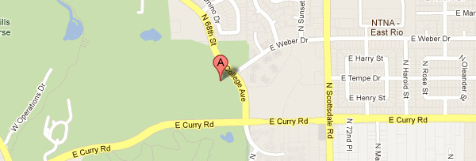

All the NotConf Details
NotConf takes place the day before JSConf on April 1st, 2012 at the Arizona Historical Society at Papago Park. The event begins at 10:00am and runs until 6:00pm.
Gettin' There
 Arizona Historical Society at Papago Park1300 North College Avenue
Tempe, AZ
Parking
The Arizona Historical Society features a large parking lot off College Ave. just steps away from the event space. Parking is free and is available on a first-come, first-served basis.
Shuttle Service
Shuttle service will be available for those coming into Phoenix from out of town. Shuttles will run between Phoenix Sky Harbor Airport, FireSky Resort, and the Arizona Historical Society. Shuttle schedule TBA.
Refreshments
Listening to amazing speakers and chatting with other JS nerds can really work up an appetite. Luckily there will be plenty of food and drink to satisfy your cravings. Complimentary soda, water, and alcoholic beverages will be available. We will be featuring a delicious assortment of local Arizona brewed beer and bottled wine. A valid I.D. confirming 21 years of age is required for alcoholic beverages.
Snacks will be available all day and local Phoenix food trucks will be camping out around lunch time. The food is hot, tasty, and on the house.
What to Bring
NotConf encourages you to bring your computer with you. Hacking stations will be set up so you can get a little work done in a beautiful desert setting. Families are also welcome. Other than that, bring your JS knowledge, questions, and pre-JSConf excitement.